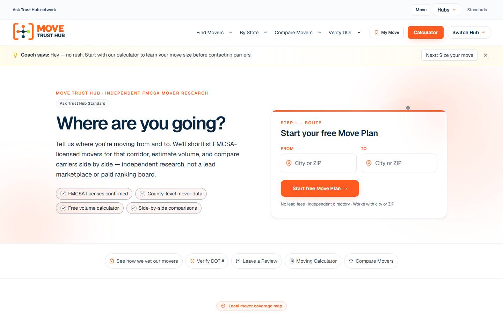
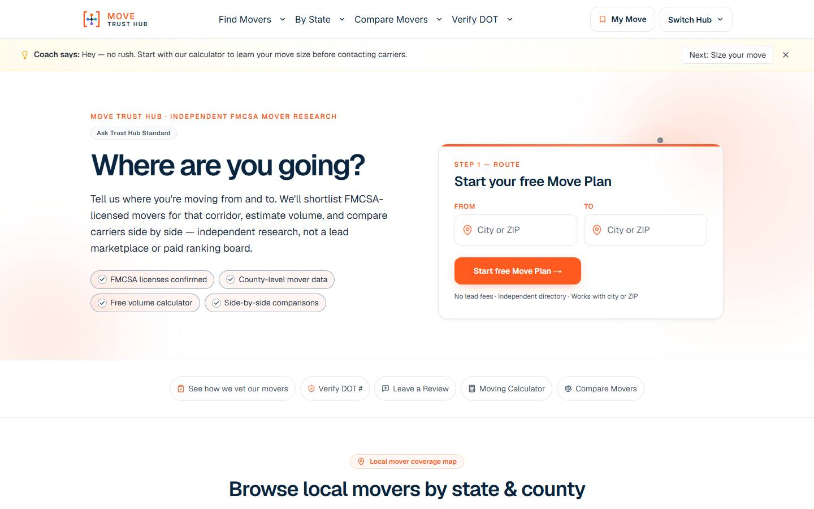
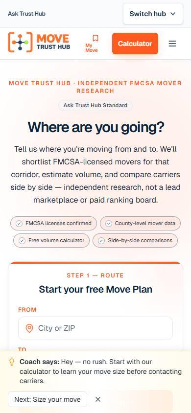
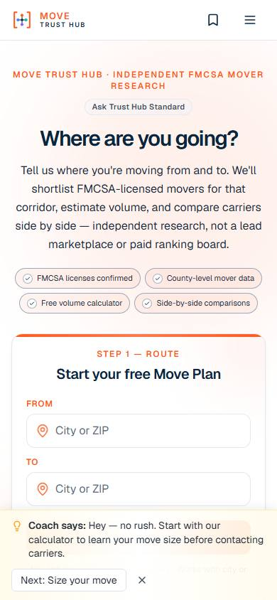
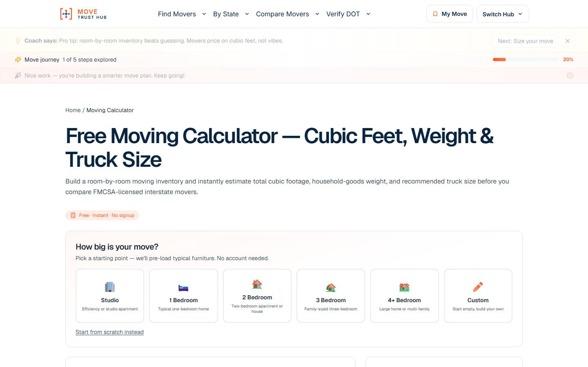

OLD MOVE vs NEW MOVE
Ask network strip removed. Global header 130px stacked → 69px. Logo x 36 → 144. Coach and Journey remain below the product header.
Desktop 1440 header
OLD — 57px network bar + 73px product header, logo x=36
 NEW — 69px, mark 36 @ x=144, Switch Hub 44 @ x=1167
NEW — 69px, mark 36 @ x=144, Switch Hub 44 @ x=1167
Desktop homepage

OLD MOVE · 1440

NEW MOVE · 1440
Network Navigator
ASK TRUST HUB NETWORK · Move Current
Mobile

OLD 122px stacked

NEW 57px / 30px mark
 Drawer
Drawer
 Network section
Network section
Calculator (Coach/Journey context)

Moving calculator — global header 69px; journey/coach remain separate surfaces